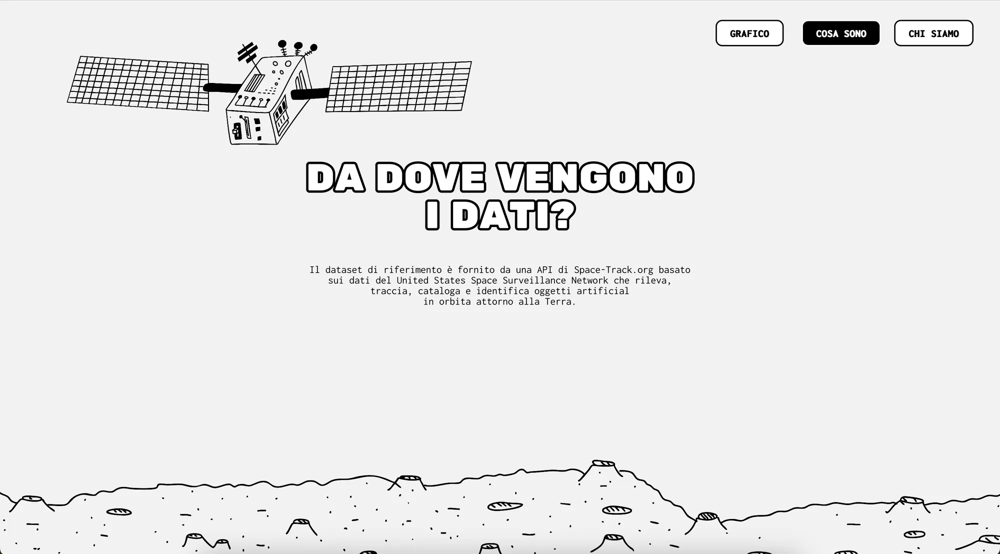
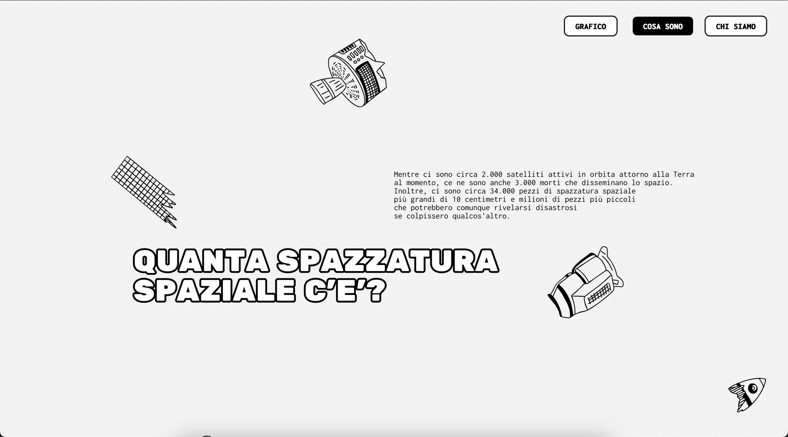

Space Debris
Space Debris è un progetto di data visualization interattiva che porta alla luce il silenzioso ma allarmante accumulo di rifiuti nell’orbita terrestre. Elaborando un massiccio dataset di oltre 15.000 record, il progetto mappa l’origine, la tipologia (dai frammenti di razzi ai satelliti inattivi) e il volume dei detriti.
Space Debris is an interactive data visualization project that brings to light the silent yet alarming build-up of waste in Earth’s orbit. Processing a dataset of more than 15,000 records, the project maps the origin, type (from rocket fragments to inactive satellites) and volume of the debris.
Questo enorme flusso di dati prende forma all’interno di un’interfaccia web esplorativa, caratterizzata da un’estetica illustrativa in bianco e nero dal forte impatto grafico.
This huge flow of data takes shape in an exploratory web interface with a bold, black-and-white illustrative style.
Attraverso una navigazione dinamica, l’utente può interagire direttamente con i dati, filtrandoli per nazione, dimensione e altitudine. Scorrendo la linea del tempo interattiva, il progetto denuncia visivamente l’inesorabile aumento dei rifiuti spaziali e le precise responsabilità geopolitiche, trasformando numeri complessi in una presa di coscienza tangibile.
Through dynamic navigation, users can interact directly with the data, filtering it by country, size and altitude. Scrolling along the interactive timeline, the project visually exposes the relentless growth of space debris and the precise geopolitical responsibilities behind it, turning complex numbers into tangible awareness.






Space Debris
Data visualizationData visualization
2024
Politecnico di MilanoPolitecnico di Milano
- Frigeni Lara
- Leonardi Jacopo
- Raimondo Sofia
- Villa Eleonora
- Zanchetta Francesco
- Costruzione del datasetDataset building
- User interfaceUser interface
- CodingCoding